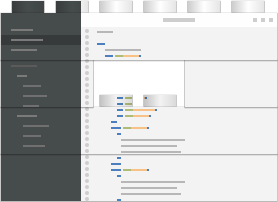

More than just a text editor; Brackets is optimized for web
development. It's optimized for you.
Helpful without taking over
With features like Live Development and Quick Edit, Brackets
streamlines development without getting in your way.
Built for web standards on web standards
Brackets is built on HTML, CSS3, & JavaScript. You can use
Brackets to build Brackets.

You complete me
Missing something in Brackets? Extension support is coming
soon.
About Brackets
Brackets is a new experimental code editor for the next generation of web developers and designers. It is optimized for HTML, JavaScript, CSS and related web technologies. It's also built on HTML, CSS and JavaScript!
Our Ideas
Tools shoudn't get in your way. Rather than clutter your coding environment with floating panels, toolbars and icons, Brackets employs a new idea we're calling "Quick Edit". Quick Edit allows us to rip open the code editor and place context-specific tools inline.
Works with your browser. WYSIWYG and what you won't see in Brackets is a "design view". That's because your favorite browser is the design view. Until now your code lived in an editor and your design in the browser and you were stuck in the middle doign the save/reload dance. Brackets creates a live connection to your local browser. Not only can it push live updates to the browser as you code, it can also set breakpoints and help you debug your applications.
Do-It-Yourself. We wanted to see if we could build Brackets with HTML, JavaScript and CSS and it turns out we could! But this also means that you can build Brackets with HTML, JavaScript and CSS. Whether you are adding a new feature, fixing a bug or just hacking on Brackets for fun, you have all the skills you need to help us build the best code editor for the web.
How We Build Brackets
The team at Adobe is practicing the Scrum agile methodology. We are currently working on a 12-business-day
sprint. At the end of each sprint we release a milestone build. What we work on in each sprint is determined by our product backlog. The backlog is basically a collection
of stories/features that we're planning to build. We start small, then we iterate until the feature is complete.
Rather than use some stale wiki page with a basic list of features, we are using Trello (from the awesome developers at FogCreek) to manage
our backlog publicly. With our public backlog you can see everything we are planning to work on
and when it will be released. If you think the priority is to low, you can create a Trello account and vote it up. You can even participate in the commented
discussion on how we deisgn the feature.
We believe in agile and we believe that open source must be community driven. So expect priorities to change based on your input.
Ready to Hack on Brackets?
If you want to fork us and start hacking away, just visit our repositories on GitHub.
There are two GitHub projects. The core of the project is brackets. It's where you will find all the HTML, JavaScript and CSS.
There is a second project called brackets-app that provides a thin native wrapper to bring Brackets to the desktop.
Because we are building Brackets on open web standards we aren't limited to where Brackets can go. The desktop is just the first target for Brackets so we decided to
seperate the desktop wrapper from the core code base. You can probably imagine a few other brackets projects yet to be created like brackets-embed (for embedding into existing web applications)
and brackets-tablet (for developing on the go).
brackets is a submodule of brackets-app.
You'll want to pull brackets-app directly from GitHub which will pull the submodule brackets. Working with git submodules can get a little complex
so we've provided a step-by-step guide.
Want to Contribute?
"A little bit of chaos can save a large amount of bureaucracy."
If you want to submit back to the Brackets project, make sure you have read and signed the Brackets CLA. We're not a big fan of legal documents, but
this one is important. We choose to release and develop Brackets under an MIT License so there are no limitations
to where the code can go and what you can do with it. To protect that freedom, we need to make sure the code you contribute is your own.
Beyond simple contributions, we are starting with a small lightweight governance model and will grow into a more complex model (if needed).
Project maintainers review and evaluate pull requests with each sprint.
Small contributions (like bug fixes) will be accepted at review time.
Significant contributions (like big features) that need additional work will be added to the project backlog.
To start, the development team at Adobe will be the sole project maintainers, but we need your help. If you submit at least 7 contributions and share our vision for Brackets we'll give you commit rights.
Stay Informed
For Contributors
Our developer mailing list is the place for contributors and extension builders to share ideas and get support from the Brackets team. You can even
chat directly with the team on IRC.
Brackets is still in the oven and needs to bake a little longer before it's a full-featured code editor. The milestone builds available on GitHub are there for contributors
and those special kind of crazy developers who love to live on the edge. Performance, stability and features are all in flux. Use at your own risk.
If the current build is missing something critical, build it yourself, or vote it up on our public backlog. If you find a bug, feel free to fix it yourself or file an issue.
Remember, everytime your criticise an open source project before it's 1.0 release, a LOLcat dies.